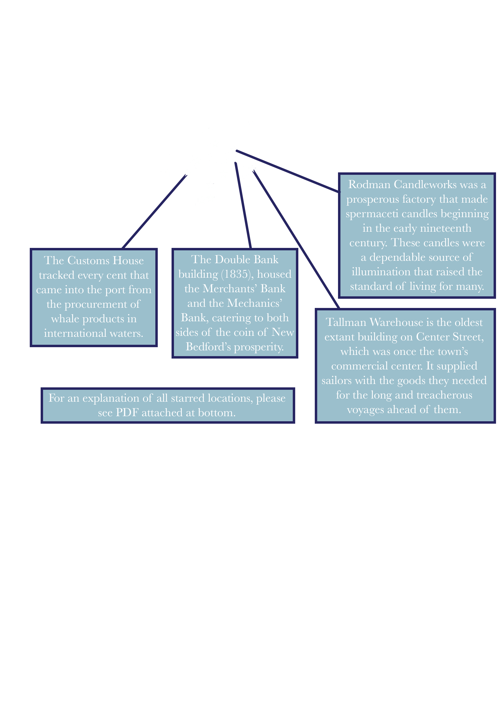

The Rise and Fall of New Bedford's Whale-Fishery
It is no surprise that humans have mythologized such formidable animals as whales throughout the duration of our interspecies relationship. The Greeks’ kētŏs and the Romans’ cetus, appear throughout mythology as fierce sea monsters in need of heroic slaying (they also gave us today’s word for the study of whales, cetology). Ancient eastern and Mesopotamian cultures had similar notions of ocean-dwelling behemoths capable of overpowering humans with their force. Consider the Old Testament story of Jonah who was swallowed by a marine giant (which may or may not have been a whale, depending upon translation and interpretation). Similarly, tribal cultures indigenous to climes ranging from the Arctic to New Zealand have long passed down stories of enormous and tenacious fish. And, of course, most relevant to the story at hand is Herman Melville’s elusive and maddening sea creature in Moby Dick. It seems there are few symbols of human frailty and aquatic angst more ubiquitous than the mega-swimmer. Though some deemed them sacred, across almost all mythological contexts, humans have sought to conquer the whale.
In reality, too, have humans long been obsessed with hunting whales. Inuits, Basques, and Nantucketers alike have all found success and satisfaction in slaying the sea’s largest beings. They have reaped the benefits of this dangerous hunt with excesses of blubber, meat, bone, and oil. It is this last commodity with which New Bedford’s story is primarily concerned. Eventually becoming known as “The City that Lit the World,” New Bedford earned its reputation as a worldwide hub for the whale-fishery, and the processing of oil for lamps and candles, in the nineteenth century.
Part One: Out to Sea

Practiced whalers began arriving in the area in the middle of the eighteenth century. Old Dartmouth was an agrarian colonial settlement at the mouth of the Acushnet River, land which Quaker emigrants from Plymouth had purchased from the Wampanoag people a hundred years prior. The whalers, arriving from Nantucket, were attracted by a town that represented their shared Quaker beliefs and promised commercial growth potential on the mainland. Among the leaders was Joseph Rotch, who was responsible for building the first large whaling ship in New Bedford. The Dartmouth was the first ship to bring American whale oil to London, and is further remembered for its return cargo of tea which was dumped into Boston harbor in the Tea Party of 1773.
New Bedford’s incipient whaling industry was stalled by the wartime priorities of the American Revolution. Destruction to the industry was twofold: whaling ships were recast as naval vessels in a time of urgent demand and trade connections with the British market for oil were inoperative. Prior to the Revolution, New England whalers had been growing increasingly audacious—in 1712, a ship captain in Nantucket followed a pod of sperm whales offshore and marked the transition to a pelagic era of whaling much more ambitious in its scope than the coastal journeys that had preceded it. With the advent of onboard try-works, voyages were fully liberated from shore since they no longer had to dock to process blubber and oil. In 1793, Rebecca was the first ship to return with oil from the Pacific ocean, and by 1819, American whalers were using Hawaii as a launching pad for Arctic voyages.
As the nineteenth century progressed, the whaling industry grew even more daring. At a time when many residents of American border territories turned west to realize their ambitions of conquest and prosperity, for New Englanders the sea was in some ways a suitable substitute for the frontier. It was vast, untamed, and daunting, but seen as ultimately penetrable by human innovation and will. The actual practice of whaling itself, too, was filled with heroism, travel, and tribulation, as men left their homes for months on end in search of a wrestling match with the leviathan. New Bedford ships reached the farthest corners of the globe, making whalers some of the best-travelled working class men and women of the nineteenth century. However, according to historian Everett Allen, the whaler “was not inclined to do the sightseeing that his unique job made occasionally possible,” and most whalers stayed close to the harbor when they came into port.
Whaling dominated the town of New Bedford, giving it the unique character still felt today in the historic district. The downtown cobblestone streets bustled with activity as sailors prepared to embark on protracted journeys; they outfitted their ships with enough supplies to take care of the full range of disasters likely to face them out at sea. Upon a bark’s return, if successful, barrels upon barrels of oil were unloaded and brought to local candle refineries or sold as raw product in competitive markets. The Customs House was swamped with activity in recording every barrel and cent that passed through the whaling port, which by 1827, was the largest in the country. It was away at sea, though, that the true drama of whaling was experienced. At the very core of such a commercially-oriented endeavor was a heart for wandering—the explorer’s sensibility touched all who engaged in the business.
Allen writes, “Whaling is, in short, like nothing else. To deny it its poetry, drama, and pathos is to ignore the struggle—man against man, man against creature, man against nature—of which it’s fabric is woven. To deny its uncomfortable, wearisome, boring, distasteful hard work is to turn one’s back on reality.” In 1889, New Bedford resident Zephaniah Pease reflected in a local history: “The story of whaling in those days borders on romance, and men of iron nerve and energy were required to man these small and poorly-fitted vessels.” In 1858, New Bedford chronicler Daniel Ricketson explained that “it would require the pen of a Defoe [of Robinson Crusoe] or Cooper [of the Leatherstocking Tales] to do justice to the romance of real life to be found in the experience of many a sailor employed in this arduous service. Launching out into the great deep in their small and clumsily constructed vessels, our early adventurers became noted for their courageous and hardy exploits.” It was of course Herman Melville who wrote the great Romantic novel on whaling. Moby Dick had been published seven years before Ricketson’s above quotation, but the novel did not receive widespread acclaim until the twentieth century. It is extraordinary, though, in its representation of themes of the Romantic movement in whaling.
The actual work of whaling, in addition to the art it inspired, was rife with Romantic notions like the allure of the frontier, the sublimity of nature, and the warning against modernity. It framed perfectly the central tension of the Romantic movement, between natural awe and industrial development. Whaling was simultaneously shrouded in harmony, pleasure, and beauty; thrill, danger, and heroism; and conquest, avarice, and madness. None demonstrates this emotional complexity better than Melville’s masterpiece. In the book’s early pages, as Ishmael is preparing for his journey and pondering the perils he is about to face, he asks himself, simply, “What could be more full of meaning?” It is not just this canonical work that illustrates the ties between Romantic thought and the rise of the whaling industry—consider the other works presented here to be further examples of this robust connection.
Part Two: Industrial Success
By 1827, New Bedford surpassed Nantucket as the largest whaling port in the country. The industry had rebounded from devastation caused by the American Revolution, the War of 1812 and the great gale of 1815. Up from just 4 in 1787, there were 120 active whaling vessels operating out of New Bedford by 1830. Over the following decades, the city’s maritime business continued to grow with gusto. Not only did these New Bedford ships bring in enormous quantities of oil (41,144 bbls sperm and 43,145 whale in 1830 alone) to be refined and processed, but they also facilitated the growth of supporting industries to build, stock, and repair the ships. Throughout the nineteenth century, the whaling industry in New Bedford grew increasingly complex and technical. As it extended from an undeniably Romantic impulse, whaling grew to become further characterized by its industrial grime and coarseness.
Historical associations in New Bedford often quote the line from Moby Dick that describes the town as “perhaps the dearest place to live in, in all New England.” They typically neglect to mention what Melville had written on the prior page: “actual cannibals stand chatting at street corners; savages outright; many of whom yet carry on their bones unholy flesh. It makes a stranger stare.” My point here is not to disparage the town, but to complicate what is often perceived as merely a quaint time in history reliant on flickering candlelight and analog pastimes.
Bear in mind that in Melville’s day, not only were the cobblestoned streets of New Bedford crowded with sailors from the most exotic corners of the globe, they were also jammed with industrial activity. The city remains a major fishing hub today, bringing in more revenue than any other fishing port in the country, mainly in scallops. A walk down MacArthur Drive—through New Bedford’s active commercial district of warehouses, mechanics, and docks—can approximate the scale of New Bedford’s historic whale-fishery in more modern terms. This less charming part of town portrays a bustling hub of maritime industry in a vernacular more familiar in the twenty-first century.
Before the whalers arrived, New Bedford was an agrarian outpost of Quaker emigrants from neighboring English colonies. It kept elements of this provincial character even as industry began to expand in the opening decades of the nineteenth century. Daniel Ricketson reminds us that, “New Bedford, although well known abroad as a place of considerable commercial importance, was but a village of some thirty-five hundred inhabitants.” New Bedford’s first commercial district (pictured above, Union and Water Streets, 1807) served to outfit sailors and townspeople alike. As the whale-fishery grew, retail became more specialized, and merchants began to cater to the industry's specific demands. Soon enough, thousands of barrels of whale and sperm oil arrived in New Bedford harbor at a time. Great promise was seen in this “victorious industry,” as described by Edmund Burke in a speech before the House of Commons. More than just an opportunity for fortunes to be made, whaling provided an opportunity for national expansion to the furthest corners of the globe in a time when competition for imperialist influence was particularly potent.
Whale ships did indeed chase their prey all over the world, engaging in a dangerous and often maddening hunt. Once a whale was in sight, rowboats were deployed with daring men at their helms. If a harpoon was successfully sunken into the flesh of a whale, the perilous chase that ensued was sometimes referred to as a New Bedford sleigh ride. Once a whale was caught—a process which the brevity of this passage has perhaps made seem misleadingly simple—the task of processing its carcass into a commodity was undertaken. The whale was typically fastened to the side of the boat while crewmembers cut out sections of blubber and—if it was a sperm whale—extracted “the case.” This term referred to the spermaceti organ, which whales use for echolocation, but is also filled with a waxy substance more valuable than typical whale oil. The crew would then “try-out” the oil by boiling it in massive cast iron pots, before packing it into barrels. Other valuable whale products included bone—actually flexible baleen that was used for everything from women’s corsets to children’s toys—and ambergris, a substance sometimes found in the bowels of whales that was a valuable additive to perfume.
It is difficult to say what else went on during the long voyages in between these punctuations of extreme activity. Despite the Romantic inclinations of the whaling set I have tried to demonstrate, Allen reminds us that “Far too little was ever recorded, and little of this ever preserved of what these men thought, of what feelings preoccupied them. Neither time, space, opportunity nor surroundings encouraged the keeping of a journal.” There is, however, an abundance of quantitative data collected by countinghouses and Customs Houses, and compiled neatly by historians, that can add more color to the commercial qualities of the whaling industry.
The first chart here shows the quantities of sperm oil, whale oil, and whalebone reaped by every whaling voyage that arrived in New Bedford between 1800 and 1915. It reveals the extreme variation in success: each dot represents a different voyage—many were entiely unsuccessful, and several of the most productive were cut off by the axes. The largest quantities recorded were 95,000 lbs bone (1854), 8,489 bbls whale oil (1871), and 5,300 bbls sperm oil (1915). The lines represent the moving average of a ship’s yield. Clearly, the decline of sperm whaling was not a problem of supply.

The second chart shows the price fluctuations of these same commodities from 1835–1887. We can see that sperm oil was generally more valuable (but also more volatile) than whale oil, and that toward the end of the century profits shifted dramatically toward whalebone (used to make anything from children's toys to women's corsets). It was ports like San Francisco, not New Bedford, that specialized in this product.
The third chart shows the overall value of the year’s catch from the same dataset. After its peak in 1857, the money brought in by New Bedford’s whaling industry steadily declined, first from a wartime shock, and then as Pennsylvanian petroleum and Californian whalebone became the favored products in commercial markets.
Part Three: Resources Ashore
In 1889, local historians, reflecting on the prosperity of their city, rightly recognized that “New Bedford’s wealth was brought from the depths of the ocean by her sons, who braved every danger, accepted every hazard, and fearlessly entered unknown regions in pursuit of their prey.” At the their time of writing they also acknowledged “many allied industries on the land” that helped support the “cosmopolitan aspect of the whaling port of New Bedford.” New Bedford’s other industries thrived in their own right, beyond merely serving the whalers. Long before Edison’s incandescent bulb had its first commercial application in 1880, or Edwin Drake discovered petroleum in Pennsylvania in 1859—marking a definitive shift away from the utility of whale oil—New Bedford whaling financiers looked to expand their business into new areas. In 1846, Thomas Bennett sought investments from local businessmen to build the town’s first textile manufactory, Wamsutta Mills. Construction began the following year and was completed in 1848. Business boomed, ultimately resilient against the downturn brought by the Civil War’s disruption in cotton supply chains, and attracted several more mills to the town. With both whaling and textiles bringing in millions of dollars annually, the New Bedford banking industry began to take off as well. Though profits from the whaling industry declined after the middle of the century, prosperity in New Bedford remained on the rise. Resources moved onto shore in the form of textile mills, immigrant communities, and stately mansions. The city’s tax revenue (primarily from property and poll taxes) continued to increase substantially even as whaling revenues declined.
One of the most valuable resources that New Bedford gained in this transition was the influx of immigrants to the city. Due to the international nature of the whaling business, foreigners had always been an integral part of New Bedford’s commercial success. This effect was compounded when they began moving permanently to the mainland in significant numbers toward the end of the nineteenth century. Immigrants, primarily from the Portuguese island colonies of the Azores and Cape Verde, were employed in a number of essential trades including on whaleships and in textile factories. They established a thriving community in the southern part of downtown, a neighborhood once known as “Fayal” after the island of Faial in the Azores. In 1871, the first Portuguese Catholic Church in North America was established at the intersection of County and Allen Streets. New Bedford continues to have one of the largest Portuguese populations in the US and celebrates this heritage proudly.

Another key development in increasing the concentration of resources on New Bedford’s mainland was the construction of mansions by successful whaling families. Stately homes began to pop up along tree-lined County Street, increasing both the town’s tangible property revenues and its cultural allure. Many of New Bedford’s elite also had notable abolitionist sentiments, deriving from their Quaker heritage and their progressive approach to business. Many freed and fugitive slaves were employed in New Bedford, and there was an active abolitionist dialogue led by none other than Frederick Douglass. Look to the New Bedford Historical Society for further reading on this chapter of the city’s history.
In some ways the whale-fishery in New Bedford was a whirlwind of lucrative fortune, with a dramatic run illuminated in the stories and charts above that brought international attention to the small New England city. Of course, the industry did not arrive out of thin air, nor did it evaporate after hitting its peak in 1857. The local character of New Bedford was both created by the whaling industry, and was precisely what allowed it to flourish in the first place. Geographically and culturally, New Bedford had conditions that permitted success in the whaling industry—equipped with a prominent and safe harbor, early Quaker merchant leadership, and a pervasive itch to take on the ocean. It was the hard work and good fortune of crewmembers and financiers themselves, though, that really secured the height of economic success. Some of the same factors that signaled the end of Romanticism brought the end of whaling too—as industrialism triumphed, kerosene lamps and electric lightbulbs replaced romantic candlelight. In addition to changes in consumer behavior, voyages grew more risky and ecologies were thrown out of balance, especially in the Arctic, and other industries prevailed in the local economy. New Bedford’s economy proved resilient to a certain extent, but never reached the same heights of global prominence earned during the era of the whale-fishery. For more information on the city and its diverse history, look to the resources from the National Park, Whaling Museum, and Historical Society. And if you haven’t already, give Moby Dick a try.